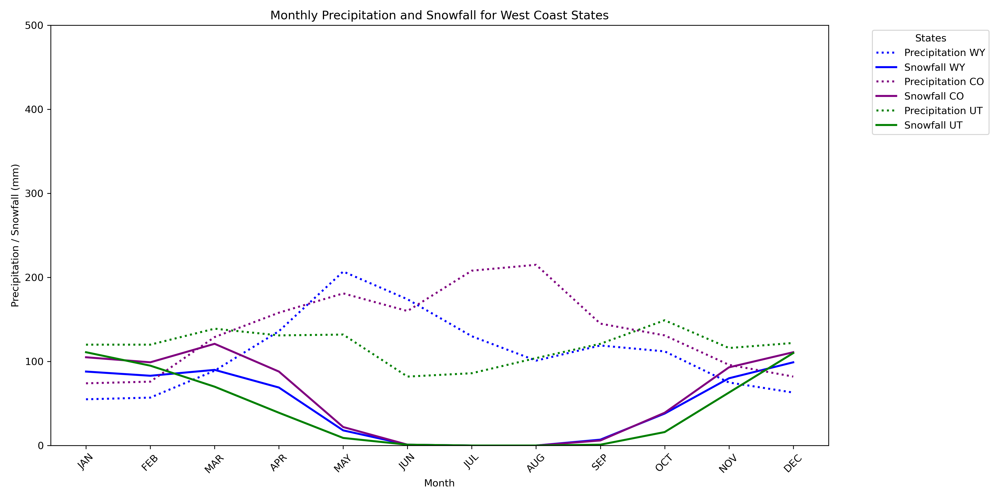
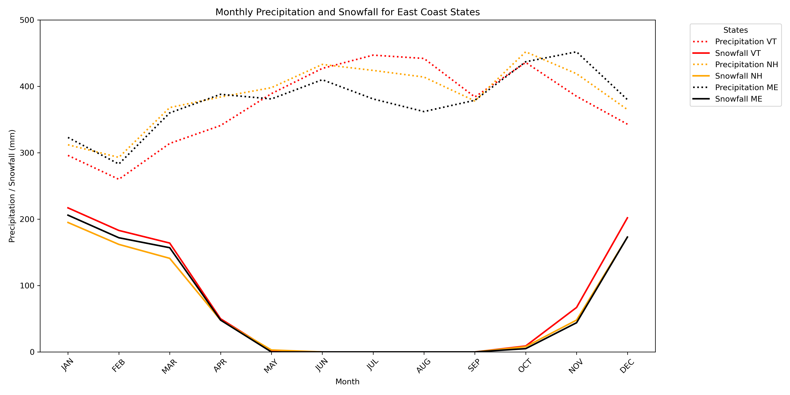

Unveiling the Dynamics of Resort Traffic, Weather Patterns, and Terrain Diversity
Interactive Ski Resort Explorer
About this Dashboard
This interactive dashboard allows you to explore ski resort data across different states and regions.
You can filter resorts by name or state to compare various metrics including altitude, snowfall,
terrain difficulty, and visitor statistics. The visualization highlights the relationship between
geographic location, weather conditions, and resort characteristics.
Use the filters above to customize your view and discover patterns in resort data. The reset button
will return the dashboard to its default state showing all resorts. Hover over data points for
additional details about specific resorts.
Resort to Snowfall Interactive Flow
This Sankey diagram shows the relationship between 3 West Coast ski resorts – Jackson Hole, Telluride, and Snowbird – and the distribution of their 24-hour snowfall across various ranges. The chart shows how each resort experiences different snowfall intensities in categories such as 0-5 cm, 5-10 cm, 10-15 cm, 15-20 cm, and >20 cm. Snowbird receives heavier snowfalls, particularly in the >20 cm ranges, followed by Jackson Hole. This reflects the region's mountainous terrain, which is known for substantial snow accumulation and potentially more expert skiers. Telluride's snowfall is in the 0-5 cm and 5-10 cm range, indicating a lighter snowfall and maybe more suited for beginners. The diagram's color-coding and proportional flows make it easy to compare the snow conditions of each resort, allowing skiers to quickly assess which resorts are likely to experience heavier or lighter snow conditions during a given time.
The design of the Sankey diagram emphasizes clarity and ease of comparison. The color coding provides an intuitive way to distinguish between the different levels of snowfall, such as blue for light snowfall and green for heavier snowfalls. The flow lines visually represent the amount of snowfall each resort received within the specified ranges, with thicker lines indicating larger proportions. This makes it easy to see the distribution of snowfall at a glance. The horizontal layout of the diagram allows for a simple comparison between the resorts, with each resort represented by a vertical bar on the left, and the snowfall ranges on the right. This approach efficiently illustrates the relationship between the resorts and snowfall patterns, giving the viewer a clear picture of which resorts are more likely to receive heavy snowfalls versus those with more moderate or consistent snowfall. The Sankey diagram's design ensures that the data is presented in a visually appealing yet informative way, making it an ideal tool for understanding complex snowfall distributions across multiple resorts.
Western Precipitation Trends

Eastern Precipitation Trends

The two line charts illustrate the monthly trends in precipitation and snowfall for West Coast states (Wyoming, Colorado, Utah) and East Coast states (Vermont, New Hampshire, Maine) from 2009 to 2017. The first chart shows that the most snowfall happens during the winter months (November to March) in the west coast states, with Wyoming and Colorado receiving the most snow as well as on the east coast, with Vermont and New Hampshire receiving the most snow. A difference between the two coasts is the amount of precipitation: the East Coast states see significantly higher precipitation, with rainfall reaching up to ~450mm, while the West Coast states generally stay below 100mm. This highlights the East Coast's heavier rainfall, which can contribute to icier conditions over the West Coast. This information is valuable for skiers, as it suggests that the West Coast may offer more favorable skiing conditions with fewer icy conditions, while East Coast resorts may see more challenging, icy conditions during the winter months.
The design of the charts was intended to offer a clear comparison between the two regions. The use of multiple lines – with dotted lines for precipitation and solid lines for snowfall – allows users to easily differentiate between the two weather patterns, emphasizing the contrast between precipitation and snowfall trends. We used the same color for each state, however, regardless of the type of precipitation. The x-axis is labeled by months, while the y-axis shows the amount of precipitation/snowfall in millimeters ranging from 0-500. The line chart format was chosen for its ability to effectively visualize trends over time, providing a straightforward way to compare seasonal data across states. The design is minimalistic to focus on the key patterns that are most relevant for skiers, such as snowfall peaks and precipitation differences, while avoiding unnecessary clutter.
Ski Altitude vs State
The boxplot provides a comparison of the altitudes of ski resorts across the East Coast and West Coast of the United States. There is a clear difference between the altitude of west coast resorts versus east coast resorts. Ski resorts on the West Coast (e.g., Colorado, Utah, Wyoming) are shown to be much higher in altitude, with many resorts reaching over 3,000 meters. In contrast, resorts on the East Coast (e.g., New Hampshire, Vermont, Maine) have much lower altitudes, typically below 1,500 meters, which can result in less extreme skiing experiences and different snow conditions. This highlights the significant role altitude plays in shaping the skiing experience, from the type of terrain to the quality of snow.
The design of this boxplot is to highlight the differences in altitude across ski resorts in a clear and concise way. It allows for a visual representation of the median and the interquartile range of altitude data, providing a comprehensive overview of altitude distribution for each region. The distinction between the two coasts is made using color coding, with the east coast resorts represented in blue and the west coast resorts in green. This helps the viewer immediately grasp the regional distinctions. Additionally, the presence of outliers is marked which can help offer further insights into the variation within each region. The boxplot is ideal for comparing distributions and this scenario, as it presents key statistical information in an easily digestible format, making it especially useful for visualizing how altitude influences ski resort characteristics across different regions.
Eastern Slope Distribution
Western Slope Distribution
The pie charts provide a clear visual comparison of the slope type distribution between ski resorts on the East Coast and West Coast. The East Coast chart depicts a balanced distribution of green, blue, and black slopes, with blue slopes (intermediate difficulty) being the most occuring. This suggests resorts in New Hampshire, Vermont, and Maine, offer a diverse range of terrain suitable for a variety of skill levels, with a slight propensity on intermediate skiers. The West Coast chart, which includes resorts like Jackson Hole and Telluride, shows a dominance of black slopes expert level, with smaller portions allocated to green and blue slopes. This reflects the West Coast's emphasis on more challenging, expert-level terrain, catering to advanced skiers looking for more difficult runs. The difference in slope distributions between the two coasts highlights the distinct skiing experiences they offer: the East Coast provides a more balanced range of difficulty levels, while the West Coast specializes in more advanced terrain.
The design of these pie charts is straightforward and effective in conveying the contrast between East and West Coast ski resorts. The use of distinct colors and segmentation for each slope type ensures that the charts are easily interpretable. The side-by-side arrangement of the pie charts makes it easy to compare the two regions directly. The labels and color coding are simple yet effective in communicating the differences in terrain offerings. Additionally, the legend provides context for the colors, ensuring that the viewer understands which slope type each color represents.
Key Insights
Over the course of this project, we have learned through this process of cleaning the data, understanding what the data means, building visualizations with the data that choosing a mountain to ski requires a number of important factors. Firstly snowfall and precipitation, while obvious factors, are incredibly important when figuring out the right area of the country to go to because the more annual snowfall the better skiing opportunities there are.
If there is heavy precipitation, then that can harm the amount of snow that is around during the year and cause for more icy conditions rather than powdery ones. As skiers, we value having snowier conditions over icy conditions because there is less opportunities for injury to occur, and so therefore areas like Colorado, Wyoming, and Utah are the most favorable states to ski. Secondly, as skiers that value slope variety across blues, greens, and blacks, we appreciate seeing which coast, east or west, has more variety in their slopes.
What can be done in the future is to zero in on a specific mountain and really try to build a detailed visualization of what the mountain runs look like, average elevation climbed for the mountain, amenities on the mountain, and implementing average price data so that users can have more discretion over how to select a mountain. To do that would take some time given how complex the mountains can be, the fluctuation in the pricing of tickets, and the scarce information about the amenities on the mountain.